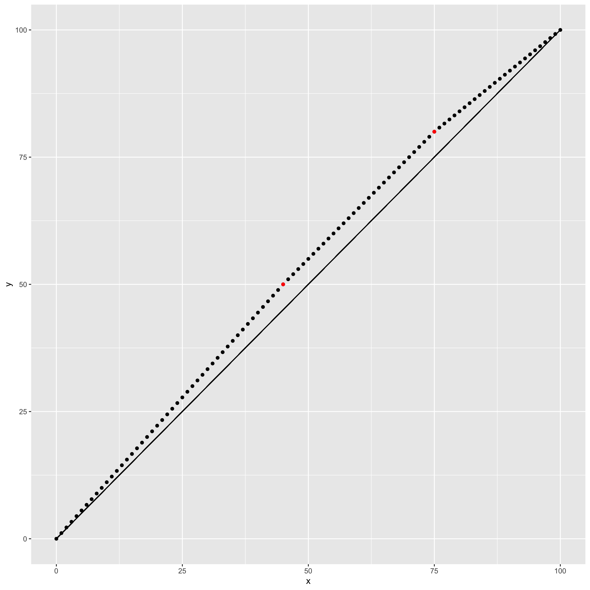

normalization.RmdIn the package, we have three scaling methods so far:
The Glonek function scales on a logit score
Let \(x_i\) be the raw mark of the \(i\)th student, then the steps are
So the two parameters are \(a\) and \(b\). Examples are given below.
df <- tibble(
raw = 0:100,
`a = 0.5, b = 1.1` = exam_norm_glonek(raw, 0.5, 1.1),
`a = 0.5, b = 1.5` = exam_norm_glonek(raw, 0.5, 1.5),
`a = 0.5, b = 0.9` = exam_norm_glonek(raw, 0.5, 0.9)
)
df %>%
pivot_longer(-raw) %>%
ggplot(aes(raw, value, col = name)) +
geom_point() +
geom_segment(aes(x = 0, xend = 100, y = 0, yend = 100), col = 'black') +
labs(col = "Parameters")In linear scaling, you give a set of boundary points of the form
\[ (x_j, y_j) \] where \(x_i\) is a raw mark and \(y_i\) is the scale mark it is mapped to. We assume that the set of boundary points always have
\[ (0,0)\text{ and }(100, 100) \]
this are added automatically by the function
The mapping is for the \(i\)th raw mark, \(x_i\) is then
\[ y_i = y_j + \frac{y_{j+1} - y_j}{x_{j+1} - x_j}\times(x_i - x_j), \text{ for }x_j \le x_i\le x_{j+1}, \]
where \(y_i\) is the scaled mark for the \(i\) student.
As an example, consider a scaling where
The following code shows how to do this and the resultant marks.
boundary_pts <- tribble(
~x, ~y,
45, 50,
75, 80
)
df <- tibble(
x = 0:100
) %>%
mutate(
y = exam_norm_linear(x, boundary_pts = boundary_pts)
)
df %>% ggplot(aes(x, y)) + geom_point() +
geom_point(data = boundary_pts, col = 'red') +
geom_segment(aes(x = 0, xend = 100, y = 0, yend = 100))
In the case of tenting, there would be a single boundary point passed through.
To aid in compring the effect of scaling, there are two functions
exam_compare_norm()
This function takes the column of raw and the column of scaled and gives the grade proportions for each.
Here is scale using the Glonek with \(a = 1\) and \(b = 1.1\).
marks %>%
mutate(norm = exam_norm_glonek(total, a = 1, b = 1.1)) %>%
exam_compare_norm(total, norm) %>%
knitr::kable()| Grade | Proportion for raw | Proportion for norm |
|---|---|---|
| FNA | 0.0952381 | 0.0158730 |
| FA | 0.0476190 | 0.0158730 |
| P | 0.2698413 | 0.0158730 |
| C | 0.0952381 | 0.1269841 |
| D | 0.1746032 | 0.2380952 |
| HD | 0.3174603 | 0.5873016 |